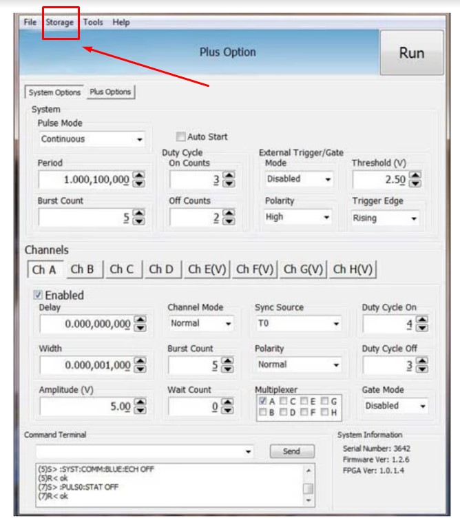
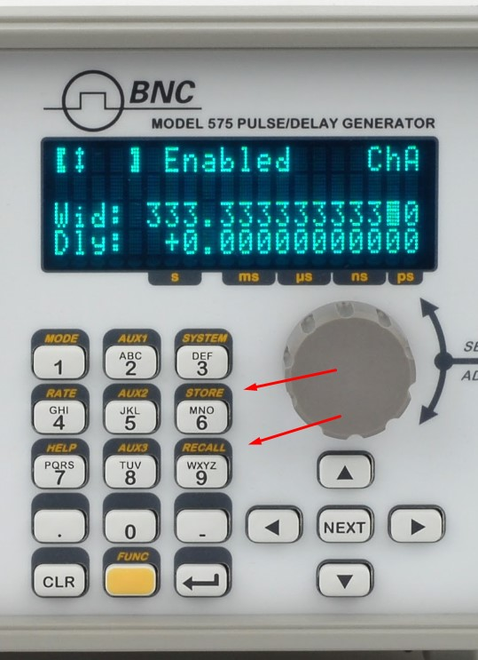
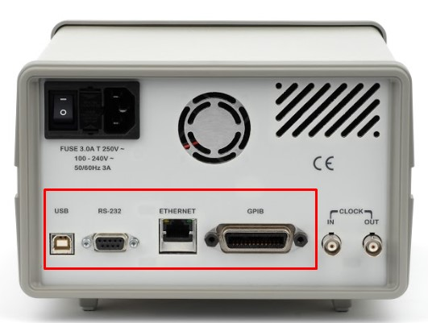
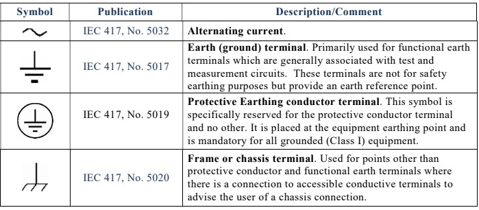
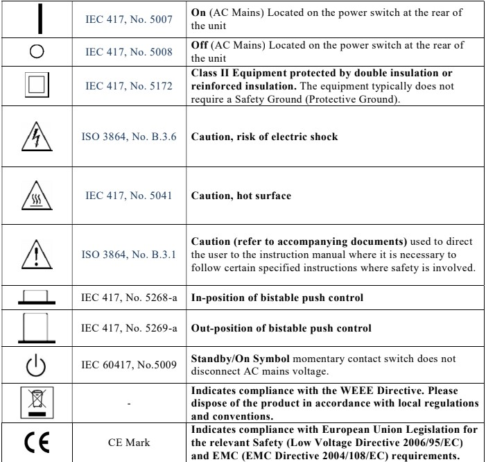

A pulse generator that can only be driven by hand is a pulse generator that has to be re-dialed every time the bench is cleared. The earlier chapters built up sweeps, burst sequences, multi-channel coordination, and the kind of repeatable test runs that real applications demand. None of that stays useful if the settings vanish at power-down or if every run depends on a person turning knobs. This chapter covers the parts of the instrument that make a setup repeatable and remote: saving and recalling configurations, the communication interfaces that let a computer drive the instrument, and the safety markings that govern any modern piece of electronics.
Storing settings is a common requirement, and most timing systems allow on-board storage to save setups. For applications that are computer controlled, the control PC offers virtually unlimited storage of configurations.

A stored setup captures the full state of the timing program, not just one number. That usually means every channel's delay, width, and output mode, the amplitude and polarity on each output, the trigger source and its threshold and slope, the reference selection, and the rep rate. Recalling it restores all of that at once. Recall works a little differently on each pulse generator, but a quick couple of buttons should bring a setup back. Some systems let you store a setup as the power-up state, so the instrument wakes up ready to run. Some let you name a setup so it is easy to find later, which matters once a drawer of saved configurations starts to fill.

A saved setup is more than a convenience. It is the foundation of a repeatable experiment. When a delay, width, and channel configuration are captured once and recalled exactly, the same timing arrives at the same outputs run after run, week after week, and from one operator to the next. The multi-channel arrangements and burst sequences described in Chapters 4 through 6 only become trustworthy when they can be reproduced without re-entry, and a stored configuration is what removes the human variation between runs. For work that has to stand up to review, it helps to treat saved setups like any other record: give them clear names, note which experiment each one belongs to, and keep a copy of the important ones off the instrument, since on-board memory is finite and a configuration file on the control PC can be backed up, versioned, and shared.
Remote communication is a useful way to program an instrument quickly, make modifications, apply scripts or LabVIEW controls, or step a unit through multiple sequences. The back panel of a pulse generator typically carries several communication options.

In modern designs, all menu settings can typically be set and retrieved over the computer interface using a simple command language. The command set is structured to be consistent with the Standard Commands for Programmable Instruments (SCPI), and the syntax is generally the same across every interface. Common interfaces include:
These interfaces differ in their wiring and their reach, not in what they let you say to the instrument. RS-232 is the simple serial port, dependable over short runs. USB is the convenient desktop connection. Ethernet puts the instrument on the network, where it can be reached from anywhere in the lab and, on instruments that follow the LXI standard for networked test equipment, discovered and configured through a web browser. GPIB is the long-standing parallel instrument bus, still common on established automated benches. The right choice usually follows the lab's existing wiring rather than any difference in capability.
SCPI is a layer that sits on top of the IEEE-488.2 conventions for instrument messaging, and knowing its shape makes any timing instrument easier to drive. Commands are organized as a tree of keywords separated by colons, so a setting reads like a path. A command that ends in a value sets something; a command that ends in a question mark asks for it. The same keyword therefore both writes and reads, which keeps a control program short and symmetric. Alongside the instrument-specific tree, every compliant instrument answers a small set of standard common commands that begin with an asterisk. A handful show up constantly:
The instrument also keeps an error queue. After a run of commands, reading that queue tells you whether anything was rejected, which is far more reliable than assuming a setup took. The illustrative sequence below shows the shape of a delay sweep. The exact keywords vary by instrument, so treat this as the pattern rather than a literal command set, and confirm the syntax in the programming guide for the specific unit.
A controller might send *RST to reach a known state, then loop: set a channel delay to the next value, trigger or arm the cycle, query a result, read the error queue, and step the delay again. Because the same routine works whether the instrument is reached over USB, Ethernet, or GPIB, the code can outlive any one connection.
Remote control is what turns a single instrument into part of an automated bench. The sweeps, burst sequences, and overlap-aware timing budgets covered in Chapters 4 through 6 are tedious to drive by hand and nearly impossible to repeat exactly that way. Under script control they become routine. A test sequence can step delay across a range, log a result at each point, change channel modes between runs, and do it all again tomorrow with identical timing. Most labs reach the instrument through a standard I/O layer such as VISA, which lets the same script in LabVIEW, Python, MATLAB, or C address the unit the same way regardless of the physical interface. In a multi-instrument setup, the same command language lets a controller configure several units in a known order, which matters when their outputs have to line up. Because the SCPI syntax stays consistent across RS-232, USB, Ethernet, and GPIB, a routine written for one connection generally moves to another with little change.
The source course includes a screen-recorded walkthrough of instrument configuration. That video is not embedded in this web edition.
A configuration walkthrough video accompanies this section in the original Berkeley Nucleonics Academy course. It is not reproduced here. To watch it, see the companion course at academy.berkeleynucleonics.com, or ask a BNC engineer for a current configuration demo.
All modern electronics conform to industry-required safety markings. The marks on an instrument are a short record of the standards it was built and tested to meet, and they tend to fall into a few familiar groups. Conformity marks, such as the CE mark in the European market and the UKCA mark in the United Kingdom, declare that a product meets the applicable regional directives. Safety-certification marks from a recognized testing laboratory indicate that the design passed an independent electrical-safety evaluation. Electromagnetic-compatibility marks, such as the FCC declaration used in the United States, show that the instrument neither emits nor is unduly disturbed by electromagnetic interference. Environmental marks, such as RoHS for restricted hazardous substances and WEEE for end-of-life electronics handling, address materials and disposal. The figures below show markings that can appear on pulse generators and on more complex timing systems.


Marks and certifications vary by model, by configuration, and by the market a unit ships into, and they change over time. The marks shown here are representative. Always confirm the current set of safety and regulatory markings for a specific instrument against its datasheet and its certificate of conformity.
Check your understanding. Five quick questions on this chapter.